Note: This is a specialized workflow that applies to native excel documents exclusively. For all other document redactions, see the Help Center topic "Apply Redactions".
Understand Native Redaction Options
To get started, open the Document View. For detailed instructions, see Overview: Native Redactions.
|
|
Note: This is a specialized workflow that applies to native excel documents exclusively. For all other document redactions, see the Help Center topic "Apply Redactions". |
Users must select a redaction type from the Select Redaction Type dropdown list to apply redactions.
Click the down arrow to select the Redaction Type. You are now ready to start applying redactions.

Document Level Redactions
From the bottom of the viewer window, select the sheet you want to redact.

You can manually redact a cell range, or column by selecting it, and clicking Redaction Options> Redact | UnRedact.
As you review documents, the Is Reviewed checkbox helps to track the progress. Click to apply.
 .
.
Preview Redactions
The redactions are shown as highlights, but a preview of the redacted document is available.
From the Toolbar, click Display Options > Redacted Preview.

From the preview window, you can:
Select individual sheets.
View the location.
View the redaction type.

All redaction actions are accessed from the Toolbar>Redaction Options.

Redact/UnRedact
Click to apply or remove redactions. You can also use the shortcut : Mouse Right-Click.
Partially Redact
Select a single cell.
Click Partially Redact. The selection window will open.

Make your selection and click  .
.
A red line under the cell indicates it is partially redacted.
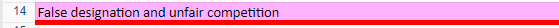
Invert in Active Sheet
The inverse redaction removes all of the existing redactions and redacts all the previously non-redacted cells and shapes based on the user selection.
Select Invert in Active Sheet. It displays the Invert Redaction Options window.
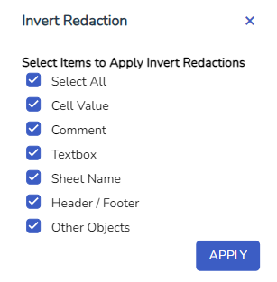
Select whichever item(s) you want to apply inverse redactions to, then click .
The inverse redaction removes all of the existing redactions in the entire workbook and redacts all the previously non-redacted cells and shapes based on the user selection.
Select Invert in Wookbook. It displays the Invert Redaction Options window.
Select whichever item(s) you want to apply inverse redactions to, then click .
All Cells Except Selection
This option applies a redaction on the entire sheet other than the selected cells. If any part of the non-selected range is already redacted, then it is ignored in the redaction.
Select the Cell(Cells) that you do not want redacted.
Select All Cells Except Selection.
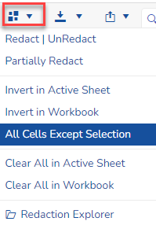
Clear All in Active Sheet
This option will clear all redactions in the active sheet.
Select Clear All in Active Sheet.
A Confirmation window will open. Click Yes to complete.
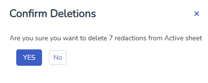
Clear All in Workbook
Select Clear All in Workbook.
A Confirmation window will open. Click Yes to complete.
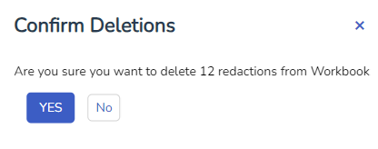
Redaction Explorer
This option opens up a summary of all redactions.
Click on the DocID to open the location of the redaction.
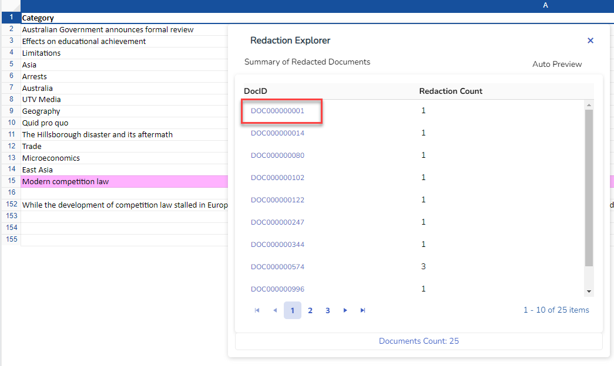
The Find & Redact tool searches the values in cells, comments, sheet names, textboxes and header/footers. Any graphical objects like image, chart etc. are not searched. The Find function is redaction-aware. The first column in the search result table displays the short-label of the redaction type for any responsive values that are redacted.
The following 3 different scopes of searches are available:
Sheet: Find values in the current sheet only.
Workbook: Find values in the entire workbook.
Selected Range: Find values within the selected cells only. If this option is selected then the search runs only on the selected cells, not on comments, textboxes etc. This option is very useful when the users want to search and redact values within a row or column only.
The Value Type drop-down provides options to further restrict the search. The following are available options:
All: Search all values including the redacted values and unredacted values.
Only Redacted: Search only values that reside in cells, comments, textboxes, sheet names and header/footer with redactions. Even if the cells, comments, etc. have a partial redaction which doesn’t cover the search term, the search will consider it as a redacted value.
Only Unredacted: Search only unredacted values.
Below are the other search options.
Regular Expression: Indicates that the search term is a regular expression.
Match Case: Indicates that the search is case-sensitive.
Match Entire Content: Indicates that the search term is an entire value, not a part of it.
From the Toolbar, click  to open the Find & Redact window.
to open the Find & Redact window.

Enter your search terms. Search regular expression or a keyword.

Select your search scope.

Select your value type.

Select other search options as needed.

Click  .The Find button runs the search.
.The Find button runs the search.
Select the values to be redacted. The Select All checkbox selects/unselects all of the values in the search results table. The users can also manually select or unselect any values in the search results table.
|
|
Note: Any responsive values marked as redacted in the first column can’t be selected. This is because the purpose of selecting the responsive values is to apply redactions, and the previously redaction values have to be skipped from applying overlapping redactions. |
Click on the Redact button. The following options to apply the redactions are as follows:
Entire Values: Redacts all of the values in the cells, sheet names, comments, textboxes, and header/footer.
Only Searched Value: Redacts only the matching part of the responsive values. This is one of the two ways to partially redact values.
Except Searched Value: This is opposite to the previous option Only Searched Value. This option redacts all the content other than the searched value.
Entire Columns: Redacts the entire columns for each responsive value.
Entire Rows: Redacts the entire rows for each responsive value.
Redaction per Value: Applies a redaction per value.
|
|
Note: When selection in the result table is changed, it automatically jumps to the location where the value resides. This facilitates a quick QC before applying mass redactions. |
The rows can be filtered based on certain criteria using the menu option Display Options >Apply AutoFilter.
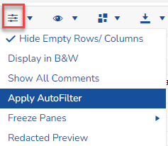
The filter applies on the currently selected row, and the selectable items in the filter include the items below the selected row. So, if the cell selection is starting from row 5 when the user applies the filter, then the filter will not include the rows 1 to row 4. If the entire sheet has to be included in the filter, then the user should select the first row before applying the filter.
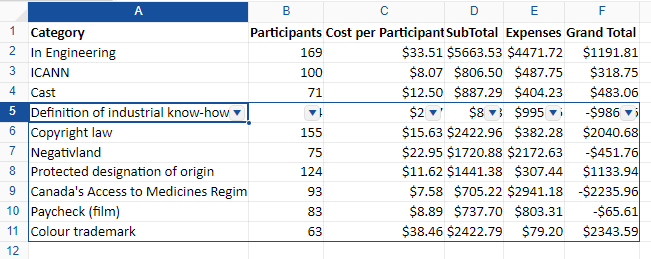
When redactions are applied on the visible rows after applying filters, a message box will display asking whether or not the user wants to redact the rows hidden by the filter.
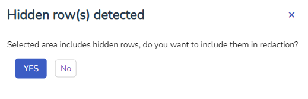
YES: Redacts hidden rows and redacts all the rows in the selection including the rows the users filtered out.
NO: Only redacts visible rows. All the hidden rows are not redacted.
|
|
Note: Cell redactions are automatically calculated to avoid overlapping redactions. If a part of the range is already redacted, then the previously redacted region is ignored. Only the unredacted part of the range is redacted. |
The Sheet List pane lists all of the sheets in the current document. If any sheet was originally hidden or password-protected then the fields are checked. Internal passwords are removed and all of the sheets, rows, and columns are visible.
Redact a Sheet Name
Select a sheet name in the Sheet List and right click on the sheet name. When the sheet name is redacted, the background color of the sheet name is changed to the selected redaction type/color.
Sheet Mass Operations
The Sheet List pane supports mass operations on multiple sheets based on the selection. The following are the steps to run mass operations.
Click the down arrow located in the upper left corner and click Mass Operations.
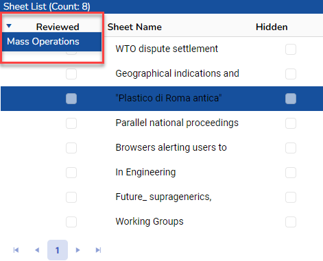
The Sheet Mass Operations window will open. All sheets in the document will be listed. Select individual sheets or click the checkbox next to "Sheet Name" to select all.
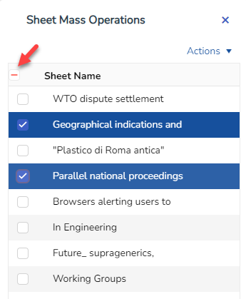
Click the Actions down arrow to open your options.
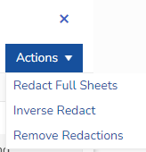
Redact Full Sheets:This option redacts all the cells, charts, images, comments, header/footers and sheet name of the selected sheets. If any of the objects are already redacted then this option leaves them as they are. The redactions are applied only to the non-redacted objects and cells.
Inverse Redact:This option applies inverse redactions to the selected sheets. The inverse redaction process removes any existing redactions on the sheet, and apply redactions to any area and objects that were not previously redacted. If a sheet has no redactions existing before executing this option, then it is equivalent the previous option Redact Full Sheets, because everything on that sheet will be redacted by this option.
Remove Redactions:This option removes all the redactions from the selected sheets.
The Redaction List pane displays a list of redactions in the current document. When a redaction is applied or removed, an entry is automatically added or removed from this table. You can jump to any redaction in the document by selecting a row in this table.
Actions
Select a redaction in the Redaction List and click on the Delete button on the keyboard to delete the selected redaction.
At the top-right of the Redaction List pane, is a down-arrow. This opens the context menu. The menu has the following two options:
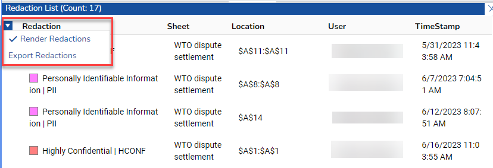
Render Redactions: It is checked by default. When checked, the Excel file shows all of the redactions visible as highlights. When unchecked, the redactions are not displayed as highlights. The users can jump to the redaction location regardless of this menu’s checked status.
Export Redactions: Exports redactions to an Excel file.
The following are the ways to remove redactions:
Manually remove a redaction
Mouse right-click on any selected redaction to remove the redaction. This can also be performed from the toolbar item Redaction Options > Redact | Unredact.
Remove from the Redaction List
Clicking the delete button after selecting a redaction in the Redaction List deletes the selected redaction.
Remove all redactions from an Active Sheet
From the toolbar, select Redaction Options > Clear All In Active Sheet. Removes all of the redactions in the active worksheet.
Remove all redactions from an entire Workbook
From the toolbar, select Redaction Options > Clear All In Workbook. Removes all of the redactions in the entire workbook.
Partial redaction removal
Partially select a redaction. This can be done by pressing down the keyboard’s Control key while selecting a part of the redaction. Once a part of redaction is selected, mouse right-click removes the selected portion of the redaction. The remaining part of the redaction retains the redaction properties like username, timestamp, redaction type etc.